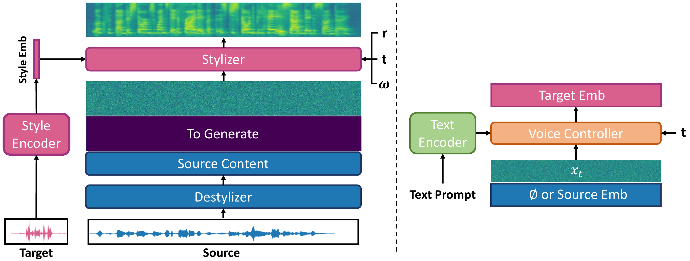

StyleStream 2.0Fast and Controllable Streaming
Voice Style Conversion
1University of California, Berkeley
End-to-end latency on an RTX 4060
Than StyleStream 1.0
Clone, design, and edit
THE AUDIO DEMOS
Hear the difference.
Transfer a target voice’s style while preserving the source words.
SEE IT IN ACTION
Streaming, in real time.
BEHIND THE VOICE
Fast by design. Controllable by text.

Abstract
Voice style conversion (VSC) aims to transform a source utterance to match the timbre, accent, and emotion of a target voice while preserving linguistic content. StyleStream 1.0 introduced the first streamable zero-shot VSC system with state-of-the-art conversion quality, but remained limited in two ways: approximately 1s end-to-end latency on consumer hardware, and the lack of a text-based interface for designing or editing target voices. We present StyleStream 2.0, a fast and controllable streaming VSC framework that addresses these limitations.
To reduce latency, we train a few-step pixel MeanFlow model and further fine-tune it with autoregressive feedback inspired by Self Forcing, improving robustness under streaming inference. This reduces end-to-end latency to 520 ms on a consumer GPU, a 2x speedup over StyleStream 1.0, while maintaining conversion quality. To enable controllable style manipulation, we remove the mel-spectrogram context and instead route target style information through a compact style embedding.
In this embedding space, we train a unified text-conditioned flow matching model that supports both text-based voice design, which maps natural language prompts to voice styles, and instruction-based voice editing, which modifies a specific attribute of a source utterance while preserving the rest. Experiments show that StyleStream 2.0 achieves the strongest target style fidelity on VSC, voice design, and voice editing, while remaining competitive on intelligibility and non-edited attribute preservation.